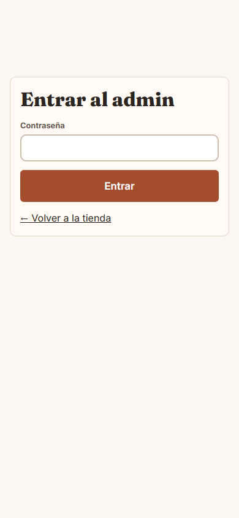
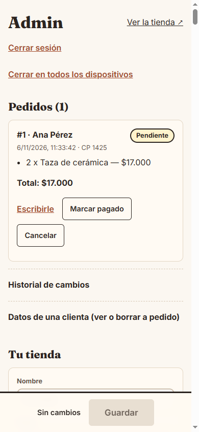
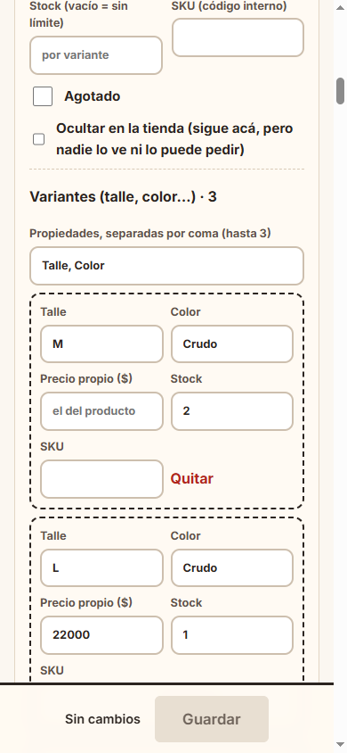
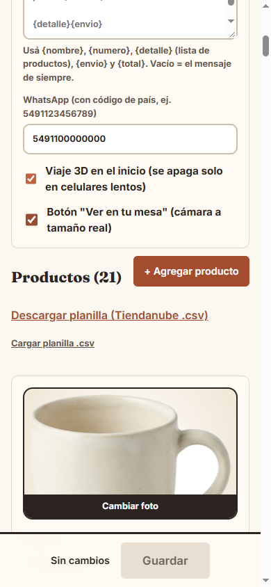
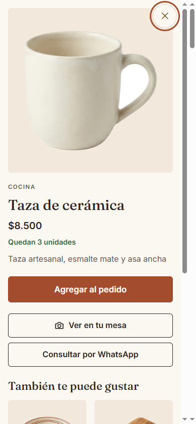

Manual de la dueña
Cómo manejar tu tienda Casa Nido desde el celular: pedidos, productos, precios y qué hacer si algo falla. Version 06/11/2026. Las capturas son del sitio de prueba con datos de ejemplo.
Tu tienda se maneja en tu-sitio/#/admin. Guardá la dirección en el celular. Tu contraseña y la app del código (Google Authenticator o similar) son solo tuyas: no las compartas.
1. Entrar al panel
- Abrí
tu-sitio/#/admin.
- Escribí tu contraseña y el código de 6 dígitos de tu app (cambia cada 30 segundos).
- Si te equivocás 5 veces seguidas, se bloquea 15 minutos: es normal, es para protegerte.
- La sesión dura 8 horas. Para salir, tocá Cerrar sesión. Si perdiste el celular: Cerrar en todos los dispositivos desde otro equipo y cambiá la contraseña.

2. Ver y atender los pedidos
Arriba de todo están los pedidos. Cada uno muestra el número, el estado, quién lo hizo y qué pidió.
| Estado | Qué significa |
|---|
| Pendiente | Entró el pedido; el stock ya se descontó. |
| Pagado | Ya cobraste. |
| Enviado / Entregado | En camino / recibido. |
| Cancelado | El stock vuelve a la tienda solo. |
Cambiá el estado con los botones de cada pedido. Un pedido enviado ya no se puede cancelar. Podés reabrir uno cancelado (se vuelve a descontar el stock si alcanza).

3. Datos de la tienda
- Nombre y frase de la portada.
- WhatsApp: el número donde te llegan los pedidos, con código de país (54 9…), sin espacios.
- Mensaje del pedido: si querés cambiar el texto que se manda por WhatsApp. Usá
{nombre}, {numero}, {detalle}, {envio} y {total}. Vacío = el mensaje de siempre.
- Los interruptores del viaje 3D y de la cámara: se pueden apagar; la tienda funciona igual.
Al terminar tocá Guardar (barra de abajo).

4. Productos: precio, stock, fotos, variantes
- Foto: tocá la foto y elegí una del celular. Mejor con fondo liso y buena luz; se recorta sola.
- Precio y precio de oferta (tiene que ser menor; aparece tachado el normal).
- Stock: la cantidad que tenés. Vacío = sin límite. En 0, figura «Agotado».
- Variantes (talle, color…): cada una con su stock y precio.
- Ocultar: lo saca de la tienda sin borrarlo.
- Medidas: si las cargás, «Ver en tu mesa» muestra el tamaño real.

5. Cargar muchos productos de una vez (Excel / Tiendanube)
- Tocá Descargar planilla: es el mismo formato de Tiendanube.
- Completala en Excel y guardala como CSV (sirve con «;» o con «,» y decimales con coma).
- Tocá Cargar planilla. El panel te dice qué se agregó, qué se actualizó y qué filas tienen errores (no se cargan, el resto sí).
- Revisá y tocá Guardar.
Si venís de Tiendanube: exportá tus productos desde su panel y cargá ese archivo acá.

6. Historial de cambios
Al final del panel, Historial de cambios muestra quién cambió precios, stock y estados de pedidos, con fecha. No se puede borrar ni editar.
7. Si una clienta pide ver o borrar sus datos
En Datos de una clienta buscala por mail o teléfono. Descargar sus datos te baja un archivo para entregarle; Borrar sus datos reemplaza su nombre, mail y teléfono por «Datos borrados a pedido» (la venta queda registrada sin datos personales). Tenés 10 días corridos para responder un pedido de acceso.
8. Cómo ve tu clienta la tienda
La clienta elige por ambiente o busca, mira la ficha del producto, lo agrega al pedido y lo manda por WhatsApp. Con «Ver en tu mesa» prueba el producto con la cámara del celular, a tamaño real (necesita una tarjeta de banco para calibrar la medida).

9. Si algo falla
- «Contraseña o código incorrectos»: revisá la hora del celular (tiene que ser automática) y probá con el código nuevo.
- «La tienda cambió mientras editabas»: entró un pedido; recargá y repetí tu cambio.
- La tienda no carga o no deja pedir: mirá
tu-sitio/api/salud; si no dice ok, avisá a soporte (ver el runbook).
- Soporte: escribí por WhatsApp/mail con una captura. Respuesta en 1 día hábil (plan mensual).